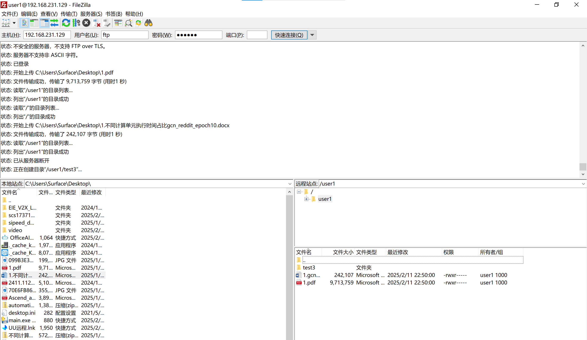
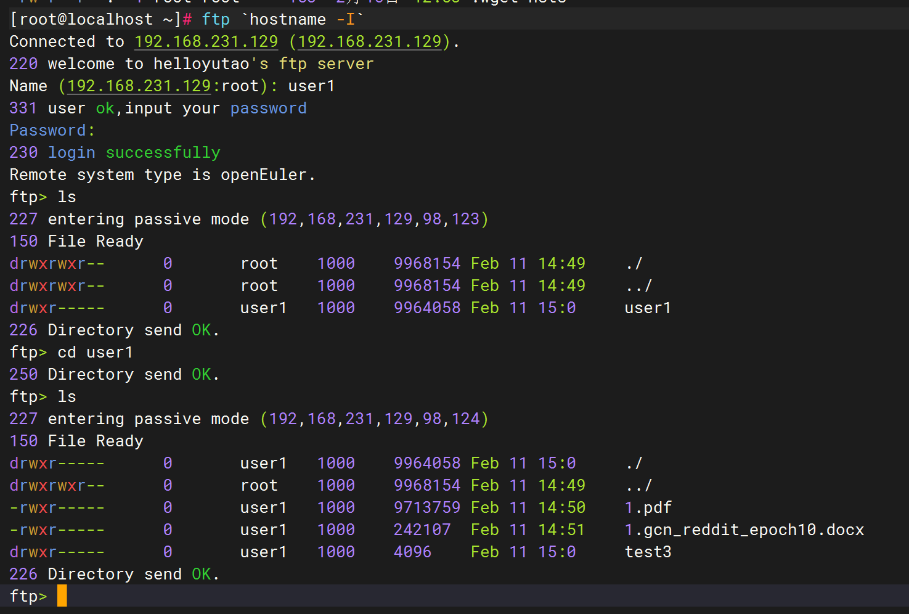
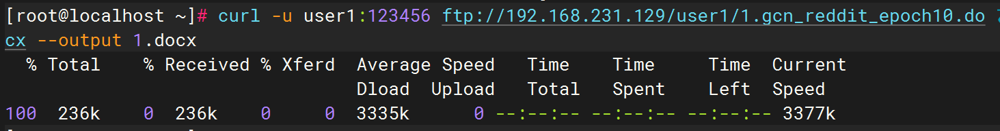

openEuler应用软件开发赛+什么都不会+初赛+ftp服务器实现
支持被动模式避免客户端位于firewall或者NAT后面的情况
支持主动模式
整个项目完全使用仓颉语言开发
未使用任何开源项目
x86_64/aarch_64
run
server
bash run-ftp.shclient
dnf install ftpftp 127.0.0.1
内置用户
| user | password |
|---|---|
| ftp | |
| user1 | 123456 |
| user2 | 123456 |
可用协议指令
| inst | 参数 | 用途 |
|---|---|---|
| “USER” | username | 登陆用户 |
| “PASS” | password | 登陆密码 |
| “SYST” | 查看系统信息 | |
| “PORT” | port | 使用客户端端口设置主动模式 |
| “LIST” | 列出目录文件 | |
| “CWD” | path | 切换目录 |
| “PWD” | 查看当前路径 | |
| “PASV” | 设置被动模式 | |
| “TYPE” | mode | 设置传输格式 |
| “RETR” | file | 下载文件 |
| “STOR” | file | 上传文件 |
| “MKD” | file | 创建文件夹 |
| “ABOR” | 流产连接 | |
| “QUIT” | 退出 |
效果
filezilla

ftp

curl

整体架构
1 | flowchart LR |
并发架构
资源池方案
将操作系统资源抽象为池，当出现新的用户请求时，从池中取出资源进行分配
在本项目中的实现即为，使用request Distribution（reqdist）模块解耦业务逻辑与用户请求
新的请求进入时，reqdist模块将会分配新的线程用于处理当前的请求，当请求断开时，释放线程资源回到池中。因此所有占用的资源都是可限制的，我们可以预设线程数以限制访问的qps，防止某些不安全攻击操作。
[可扩展]解耦的好处是，我们能够轻易的扩展其余硬件，例如，当服务器不止一个cpu（或者其他协处理器）时，线程资源分配将会复杂化，我们仅需要在reqdist模块中将资源分配给process unit，而不必考虑具体的业务逻辑。
资源锁
多个线程对文件的变动将有可能产生资源冲突。
我们最小化公共资源，将所有对实际文件的操作都聚集在configer模块当中，因此我们使用configer改变文件状态时，将会使用锁解决访问资源冲突问题。
同时对资源进行精细化控制，以便平衡时间与资源同步的问题。
权限管理
文件系统
为了实现足够精细化的权限管理，我们手工实现了一个简单的文件系统，仿照linux文件系统的inode设计，下面是一个文件夹的inode结构体，使用json文件存储inode列表。
1
2
3
4
5
6
7
8
9
10
11{
"name": "/",
"type": "d",
"user": "root",
"user_power": 7,
"group_power": 7,
"others_power": 0,
"subfiles": [
0,0,1,2
]
}文件的id取决于文件inode在json array中的index
权限
我们的权限系统依然仿照linux，user_power代表用户（创建者）本身的权限，group_power代表组用户的权限，others_power代表其他用户的权限。
组用户取决于config.json文件中user group，如下1
2
3
4
5"user1":{
"password":"123456",
"group":["ftp"],
"root":1
}例如上面的user1信息中，ftp默认用户是其组用户成员
权限数字分别代表三位数字的bool值，当第一位为1，也就是100时值为4，代表有下载查看权限，当第二位为1，也就是010时值为2，代表有下载权限，剩余一位留作扩展。tip
既然每一样都跟linux类似，为什么不直接用linux的文件系统？
因为我们对项目的要求是可扩展性，如果直接使用linux的文件系统，如果我们以后需要扩展其余权限，例如更改文件的权限，删除文件的权限，我们的扩展就会非常困难。
数据传输
主动模式
主动模式下，需要客户端告知服务器端口
因此服务器需要作为客户端连接用户机，此时无需考虑端口的问题。
被动模式
被动模式下，需要服务端告知客户端数据端口
此时服务器作为数据传输的服务器等待客户端连接。
服务器需要扫描服务器上的可用端口告知客户端以连接。
端口池
秉持所有资源皆可控的理念，我们将端口也作为配置放入配置文件，端口作为资源为客户端分配，达到可控的方式。
假设我们采用临时扫描端口的方式，那么不得不考虑的问题是，在扫描到空闲端口后，但是该端口实际上属于service所使用的端口（出现暂时空闲），在扫描到确认连接这段时间内，该端口有可能被重新占用的问题。因此我们的方案既避免服务占用ftp端口的情况，也避免ftp占用服务端口的情况，同时减少代码开发代价